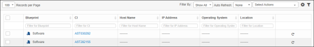
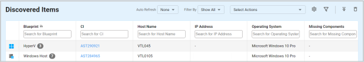

Moving Assets to CMBD
Use this function to view the assets discovered after the scan and move them to the CMDB.
|
An asset record can also be moved from the Details window. However, wait until the scan is complete before initiating a move operation. Also, once a record is moved, it cannot be retrieved. If the move appears to be unsuccessful, contact your System Administrator. |
| 1. | In the navigation pane, select Discovery Scan > Discovered Items. The Discovered Items window displays. |


| 2. | Select the applicable asset record(s). |
| 3. | From the Select Actions drop-down list, choose Move to CMDB. |
| 4. | In the Confirmation window, click Yes (to move the asset) or No (to cancel the action). The discovered assets are moved to the CMDB. |
| 5. |
|
Related Topics
Other Functions and Page Elements